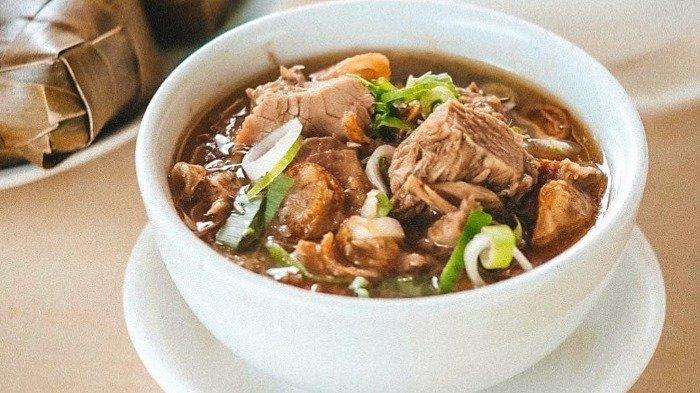

Coto Makassar
Sesuai dengan namanya Coto Makassar adalah hidangan berkuah yang berasal dari Makassar, Sulawesi Selatan. Di setiap jalan di kota Makassar, dapat dengan mudah ditemukan warung-warung yang menyediakan Coto Makassar. Rasa hidangan ini di setiap warung memang hampir-hampir sama, tapi yang membuat berbeda adalah bumbu tambahan yang diberikan oleh masing-masing pedagangnya. Dan itu menjadi rahasia dapur masing-masing.
Coto Makassar berbahan dasar daging sapi, ditambah dengan jeroan sapi, berupa paru, hati, usus, jantung, dan babat. Sementara bumbu kuahnya merupakan perpaduan sejumlah rempah-rempah dan gilingan kacang tanah yang sudah digoreng. Enak tidaknya hidangan ini memang sangat bergantung pada bumbu kuahnya.
Ramuan rempah-rempah yang terdiri dari 40 jenis dimasak di kuali tanah liat yang disebut dengan korong butta atau uring butta. Jenis kuali yang digunakan untuk memasak dipercaya ikut juga mempengaruhi rasa Coto Makassar. 40 jenis rempah itu diantaranya adalah kacang tanah, kemiri, cengkeh, pala, serai yang ditumbuk halus, lengkuas, merica, bawang merah, bawang putih, jintan, ketumbar merah, ketumbar putih, jahe, laos, daun jeruk purut, daun salam, daun kunyit, daun bawang, daun seledri, lombok merah, lombok hijau, gula talla, asam, kayu manis, garam, pepaya muda untuk melembutkan daging, dan kapur untuk membersihkan jerohan. Konon rempah-rempah itu tidak hanya berguna untuk menentukan rasa Coto Makassar, tetapi juga sebagai penawar kolesterol yang ada di jeroan.